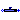
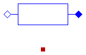
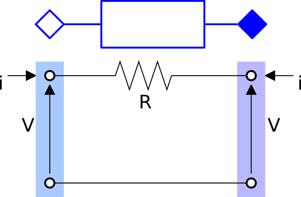

Package with models for DC electrical lines
This package contains models for lines for DC circuits.
Extends from Modelica.Icons.Package (Icon for standard packages).
| Name | Description |
|---|---|
|  Line | Model of a DC electrical line |
| Model of a two port DC resistance and capacity (T-model) | |
| Model of a two port DC resistance | |
| Package with example models |
Model of a DC electrical line

This model represents a DC cable. The model is based on Buildings.Electrical.DC.Lines.TwoPortRCLine and provides functionalities to parametrize the values of R and C either using commercial cables or using default values.
Extends from Buildings.Electrical.Transmission.BaseClasses.PartialLine (Partial cable line dispersion model).
| Type | Name | Default | Description |
|---|---|---|---|
| replaceable package PhaseSystem_p | PartialPhaseSystem | Phase system of terminal p | |
| replaceable package PhaseSystem_n | PartialPhaseSystem | Phase system of terminal n | |
| Length | l | Length of the line [m] | |
| Power | P_nominal | Nominal power of the line [W] | |
| Voltage | V_nominal | Nominal voltage of the line [V] | |
| Model | |||
| Assumptions | |||
| Boolean | use_C | false | Set to true to add a capacitance in the center of the line |
| Load | modelMode | Types.Load.FixedZ_steady_state | Select between steady state and dynamic model |
| Thermal | |||
| Boolean | use_T | false | If true, enables the input for the temperature of the cable |
| Temperature | TCable | T_ref | Fixed temperature of the cable [K] |
| Tech. specification | |||
| Auto/Manual mode | |||
| CableMode | mode | Buildings.Electrical.Types.C... | Select if choosing the cable automatically or between a list of commercial options |
| Manual mode | |||
| Generic | commercialCable | Buildings.Electrical.Transmi... | Commercial cables options |
| Type | Name | Description |
|---|---|---|
| replaceable package PhaseSystem_p | Phase system of terminal p | |
| replaceable package PhaseSystem_n | Phase system of terminal n | |
| input RealInput | T | Temperature of the cable |
 Buildings.Electrical.DC.Lines.TwoPortRCLine
Buildings.Electrical.DC.Lines.TwoPortRCLine
Model of a two port DC resistance and capacity (T-model)

This model represents a series of two resistances and a capacitance that connect two DC interfaces. This model can be used to represent a cable in a DC grid.
The model represents the lumped resistances and capacity (T-model) as shown in the figure below.

As can be seen in the figure, the resistance R is split in two halves
and the capacitance is located in the center.
The capacitance in the center is optional and can be selected using the
boolean flag use_C = true. The model is either dynamic or static depending on the
presence of the capacitive effect.
Extends from Buildings.Electrical.Transmission.BaseClasses.PartialTwoPortRLC (Partial model of an RLC element that links two electrical connectors).
| Type | Name | Default | Description |
|---|---|---|---|
| replaceable package PhaseSystem_p | PartialPhaseSystem | Phase system of terminal p | |
| replaceable package PhaseSystem_n | PartialPhaseSystem | Phase system of terminal n | |
| Boolean | useHeatPort | false | =true, if HeatPort is enabled |
| Temperature | T | T_ref | Fixed device temperature if useHeatPort = false [K] |
| Resistance | R | Resistance at temperature T_ref [Ohm] | |
| Temperature | T_ref | 298.15 | Reference temperature [K] |
| Temperature | M | 507.65 | Temperature constant (R_actual = R*(M + T_heatPort)/(M + T_ref)) [K] |
| Capacitance | C | Capacity [F] | |
| Inductance | L | 0 | Inductance [H] |
| Voltage | Vc_start | V_nominal | Initial value of the voltage of the capacitance in the middle of the line [V] |
| Nominal conditions | |||
| Voltage | V_nominal | Nominal voltage (V_nominal >= 0) [V] | |
| Model | |||
| Assumptions | |||
| Boolean | use_C | false | Set to true to add a capacitance in the center of the line |
| Type | Name | Description |
|---|---|---|
| replaceable package PhaseSystem_p | Phase system of terminal p | |
| replaceable package PhaseSystem_n | Phase system of terminal n | |
| HeatPort_a | heatPort | |
Model of a two port DC resistance
This model represents a resistance that connect two DC interfaces. This model can be used to represent a cable in a DC grid.
The model represents the lumped resistance as shown in the figure below.

Extends from Buildings.Electrical.Transmission.BaseClasses.PartialTwoPortResistance (Partial model of a resistive element that links two electrical connectors).
| Type | Name | Default | Description |
|---|---|---|---|
| replaceable package PhaseSystem_p | PartialPhaseSystem | Phase system of terminal p | |
| replaceable package PhaseSystem_n | PartialPhaseSystem | Phase system of terminal n | |
| Boolean | useHeatPort | false | =true, if HeatPort is enabled |
| Temperature | T | T_ref | Fixed device temperature if useHeatPort = false [K] |
| Resistance | R | Resistance at temperature T_ref [Ohm] | |
| Temperature | T_ref | 298.15 | Reference temperature [K] |
| Temperature | M | 507.65 | Temperature constant (R_actual = R*(M + T_heatPort)/(M + T_ref)) [K] |
| Type | Name | Description |
|---|---|---|
| replaceable package PhaseSystem_p | Phase system of terminal p | |
| replaceable package PhaseSystem_n | Phase system of terminal n | |
| HeatPort_a | heatPort | |